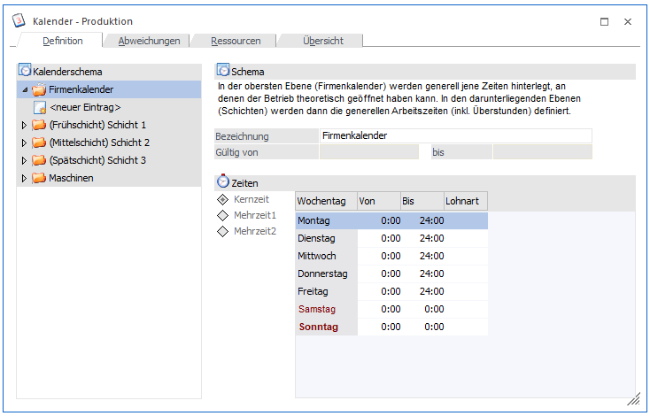
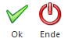

Grundsätzlich kann ein Firmenkalender und beliebig viele Unter-Kalender auf beliebig vielen Ebenen definiert werden.

Folgende Eingabefelder können bearbeitet werden:
Ø Kalenderbaum
Auswahl welcher Kalender bearbeitet werden soll. Die Auswahl erfolgt durch Klick auf den gewünschten Kalender (Schema). Der gerade bearbeitete Kalender wird farblich gekennzeichnet und das Ordnersymbol wird aufgeklappt dargestellt.
Durch Klick auf das Symbol wird die jeweils nächste Ebene geöffnet. Durch Klick auf "<neuer Eintrag>" wird ein neues Schema angelegt.
Es können beliebig viele Schemata auf beliebig vielen Ebenen definiert werden.
Schema
Ø Bezeichnung
Eingabe der Bezeichnung des Schemas. Die Bezeichnung ist 30-stellig.
Ø Gültig von/bis
Die Gültigkeit des Schemas kann auf einen definierten Zeitraum beschränkt werden.
Zeiten
Ø Kernzeit / Mehrzeit1 / Mehrzeit2
Beim Schema wird zunächst die Kernzeit (der Zeitraum pro Tag in welchem die Ressourcen zur Verfügung stehen) definiert.
Diese kann durch Mehrzeiten ausgedehnt werden. Für Mehrzeiten werden üblicherweise andere Lohnarten gelten als für Kernzeiten - diese können daher für Mehrzeiten gesondert verwaltet werden. Die Mehrzeit 1 muss vor der Kernzeit liegen, die Mehrzeit 2 dahinter.
Ob die Mehrzeiten für die Ressourcenplanung berücksichtig werden sollen kann beim Einplanen der Tätigkeiten innerhalb der Produktionsauftragsanlage bestimmt werden.
Beispiel
Üblicherweise wird von 07:00-16:00Uhr gearbeitet. Diese Zeitspanne ist die "Kernzeit".
Bei hoher Nachfrage wird morgens früher begonnen, nämlich um 06:00Uhr. Der Zeitraum von 06:00Uhr bis 07:00Uhr ist daher die "Mehrzeit 1".
Am Abend wird unter Umständen zwei Stunden länger gearbeitet. Der Bereich zwischen 16:00Uhr und 18:00Uhr ist daher die "Mehrzeit 2".
Ob die Kernzeit oder die Mehrzeiten des Schemas bearbeitet wird kann durch Wahl der entsprechenden Checkbox gesteuert werden.
Ø Wochentag von/bis
Eingabe der Arbeitszeit für den entsprechenden Wochentag.
Ø Lohnart
Wird zurzeit nicht unterstützt.
Buttons

Ø OK
Speichert die neu angelegten bzw. geänderten Daten.
Ø Ende
Der Programmbereich wird verlassen.